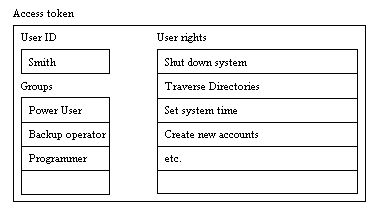
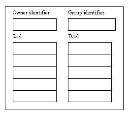
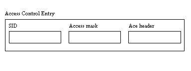
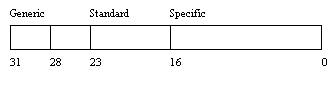

Win32 Programming
Features for Windows NT and Windows 95
by Marshall Brain
Security
One of the
most fascinating parts of Windows NT is its security system. It
is possible to almost completely ignore this part of the Win32
API if you don't care to secure things. However, there are many
situations where the security features built into NT can help
to solve some very interesting problems. In this article you will
learn about the intent of the NT's security system, the concepts
that help you to understand what is going on, and the techniques
used to manipulate it.
Please note that some of the code in this chapter will not work as described unless you log in as the administrator. Only administrators have the rights necessary to perform some of the system security tasks demonstrated here.
Most people have never seen or worked with a security system as complete and intricate as NT's. Experienced UNIX programmers are familiar with UNIX's file security system and with the idea of root privileges, but these systems are primitive compared to NT's. The following examples give you some feeling for the scope and preciseness of NT's security system.
People using the NT File System can see the security features built into it because of the Security menu and security editor in the File Manager. You can write your own code that modifies the security information in an NT File System volume at that same level of detail. From programs that you write, you can control who has what type of access to any file on an NTFS volume, just like the File Manager does.
The above examples show that NT allows you to give precise security access to specific objects in the system, and it also allows you to monitor and record how objects are used.
One of the most interesting and frustrating parts of the NT security system is the huge number of new concepts that it contains, along with the vocabulary that describes these concepts. The goal of this section is to put those concepts into simple terms so that you can understand them.
By now you are already familiar with the most visible part of the security system: passwords. You can think of the password system as the lock on the front door of a building. The password system keeps people out of an NT system just like a lock on a building keeps people from wandering around in the lobby. Your password gives you a key to the building that is an NT system.
If one of your hard disks is formatted with the NT File System, then you know that there is a second layer of security in NT as well. You can think of this second layer as locks on individual rooms inside of the building. Some rooms are wide open and anyone can walk in, while others have locks on them. The locks on an individual room can be very specific in NT. For example, you can create a file on a volume formatted with the NT File System and you can let any combination of people access it:
Think of a secured file as a room. The security permissions that you put on the file are like a lock that determines who is allowed into the room. You can also control what a person is allowed to do once they get into a room. For example, with a file you can give one user read access, another user write access, and so on. See the Permissions dialog in the Security menu of the File Manager for examples.
Think of NT as a building full of rooms. Your password gives you a key that lets you into the building. Once inside, you can then use your key to enter individual rooms. Some rooms have no locks, while other are locked and will let you in, and still others will refuse you entry. The rooms are individual objects in the NT system: files, registry keys, thread and mutex objects, etc.
You can also put a sentry at the door of any of the rooms. The sentry's job is to monitor who uses the room, and how they use it. This is called auditing in NT. When you attach an auditing request to an NT object, the object writes entries in the security portion of the event log whenever certain users access the object in specified ways. For example, if you have access to an NT file system volume and have administrative privileges, open the File Manager and select a file that you own. Then select the Auditing option in the Security menu. For any individual user or group, you can detect when they successfully or unsuccessfully (or both) read the file, write to the file, execute the file, and so on.
The most obvious place to see these security features is in the NT File System. The security editor in the File Manager lets you easily and graphically manipulate all of the different security features available for files. This same level of security detail applies to many different objects in NT. For example, you can secure items in the Registry with this level of detail, and in fact the registry editor contains the same sort of visual security editor that the File Manager contains. You can also specify security attributes on many internal system objects. For example, you can limit access to a named pipe (see Section 10.9) in this way.
Here is a brief summary of the concepts discussed above:
Now that you understand the general concepts, let's look at some of NT's specific vocabulary for discussing security.
When you log into an NT system, the system gives you an access token. The access token is your key to all of the locks found in an NT system. Your key will turn some locks, but it will not work in all of them. Each process that you create contains a copy of your access token.
The access token does two different things. First, it identifies who you are. For example, if you logged in as the user "smith", then your access token contains your identity as that user. The access token also identifies you by all of the groups you belong to. For example, in the User Manager you may be a member of the Power User group, the Backup Operator group, and a custom group named Programmers. Your access token identifies you as a member of these different groups.
Your access token also contains all of your user rights. Each group you belong can have user rights, or privileges, associated with it. If you open the User Manager you can look at the list of rights with the User Rights menu option. For example, power users have the right to set the system time, while normal users do not. Some users can shut down the system while others cannot, and so on. The system builds up the list of rights in your access token by combining all of the individual rights found in each group you belong to. Individual users can also have special rights granted to them specifically by the administrator with the User Manager.

An access token contains a user ID, the names of the groups the user belongs to, and the combined user rights from all of those groupsMost of the objects in the system can have locks on them. In NT, a lock is called a security descriptor. If the Create function for an object contains a security parameter, you can lock it. The following objects can have locks:
To lock an object, you create a security descriptor and pass it to the object when you create it. In all of the previous sections in this book, the example code has passed a zero in for the security attributes parameter. The zero indicates to the system that it should create a default security descriptor that allows you to access the object. See the book for a description of default security descriptors.
A security descriptor contains four things:
The owner of an NT object can always set its security information. For example, if you own a file and accidentally set it so that no one can access it, you can still go back and change its security because you are the owner. It is like breaking the lock to your house: Even though the lock is broken, you can always replace it with a new one because you own the house.

The security descriptor for any object contains the owner and group IDs, the discretionary access control list that determines who can and cannot access the object, and the system access control list that controls who gets audited when they use the objectThe DACL (Discretionary Access Control List) is the heart of the actual lock. It controls who can and cannot access the object. It is an access control list, or ACL, that contains access control entries, or ACEs. Each ACE indicates one user or group, along with what they can or cannot do to the object. For example, if the object is a file and the user "smith" is allowed to read from the file, then there will be an ACE that indicates that user "smith" has read access. This is called an access allowed ACE because it allows a user or group to do something. There is one access allowed ace for each person or group allowed to access the object. Similarly, there are access denied ACEs which deny specific users or groups access. For example, if you have given the group Power Users access to an object, but "smith" is a power user and you don't want him to have access, an access denied ACE keeps him out.
The SACL (System Access Control List) also contains ACEs, but these ACEs determine who will be audited and why. An ACE in a SACL is called an audit access ACE. For example, if the system is supposed to create an audit entry whenever the user "smith" successfully reads a file, one ACE in the SACL states that.

An Access Control Entry (ACE) specifies one user or group (the SID identifies the user or group) and the type of access allowed. ACEs are stored in ACLs (see Figure 10.3).To convey its information, each ACE in an ACL consists of three parts: a Security Identifier, or SID, an access mask, and an ACE header. The SID is a value stored in the registry (and also available through function calls) that uniquely identifies each user or group that exists in the User Manager. The ACE header determines the type of ACE: access allowed, access denied, etc. An access mask is a 32-bit mask that determines what the user can do with the object. There are standard rights that apply to all objects on the system. Some objects also have a variety of special access rights that apply only to them. For example, you can apply the following specific and standard access rights to a file object:
The generic rights are pre-defined combinations of standard and specific rights and change from object to object. See Section 10.5 for more information on these securable objects and their access rights.
An access mask is simply a 32-bit bit-mask. Each of the standard, specific and generic rights have a bit associated with them in the access mask. The first 16 bits hold specific rights and are keyed to the object that the access mask refers to (for example, the FILE_ constants above). The next 8 bits hold standard rights. The high-order four bits hold generic rights.

The bit layout of an access maskAs you can see, there is a whole cornucopia of new terminology used to describe NT's security features. However, you will become intimately familiar with all of these words as you work through the sample code, and all of the concepts are easy to understand. Here is a quick summary:
The following section presents two simple example to show how the security functions and all of this vocabulary fit together.
The purpose of this section is to walk through the creation and application of a security descriptor for a file object. A file object is chosen for this example because it is common and easily understood, and also because it is easy to view the results with the security editor in the File Manager to prove that the code works. However, if your hard disk is not formatted with the NT File System, this code will not do anything and the security editor is disabled. You have three options if this is the case:
Alternatively, you can wait a moment and we will apply this same code to a registry key. You will be able to see the security editor in the registry editor regardless of the file system that you are using.
The code below contains a program that creates a new file. The security descriptor for the new file is set up so that only the user "guest" can use the file, and the user can do nothing but read it. The program contains absolutely no error checking so that the essentials are easy to see. When you run the code, it should create a file on c:\ named testfile. Select the file in the File Manager and then choose the Permissions option in the Security menu. You will find that there is one entry in the list: The user "guest" can read the file. Feel free to change the name of the file or the name of the user when you run the code yourself.
#include <windows.h>
#include <iostream.h>
SECURITY_ATTRIBUTES sa;
SECURITY_DESCRIPTOR sd;
BYTE aclBuffer[1024];
PACL pacl=(PACL)&aclBuffer;
BYTE sidBuffer[100];
PSID psid=(PSID) &sidBuffer;
DWORD sidBufferSize = 100;
char domainBuffer[80];
DWORD domainBufferSize = 80;
SID_NAME_USE snu;
HANDLE file;
void main(void)
{
InitializeSecurityDescriptor(&sd,
SECURITY_DESCRIPTOR_REVISION);
InitializeAcl(pacl, 1024, ACL_REVISION);
LookupAccountName(0, "guest", psid,
&sidBufferSize, domainBuffer,
&domainBufferSize, &snu);
AddAccessAllowedAce(pacl, ACL_REVISION,
GENERIC_READ, psid);
SetSecurityDescriptorDacl(&sd, TRUE, pacl,
FALSE);
sa.nLength= sizeof(SECURITY_ATTRIBUTES);
sa.bInheritHandle = FALSE;
sa.lpSecurityDescriptor = &sd;
file = CreateFile("c:\\testfile",
GENERIC_READ | GENERIC_WRITE,
0, &sa, CREATE_NEW,
FILE_ATTRIBUTE_NORMAL, 0);
CloseHandle(file);
}
Start by looking at the bottom of the program. Here you will find a call to CreateFile that creates a file named c:\testfile. However, this call has a security parameter at location four in the parameter list. In all NT code you have probably seen, you have seen a zero used in this location. The zero tells the operating system to use a default security descriptor when it creates the object (see Section 10.8 of the book). The zero value also disables inheritance (see Chapter 5). This code code instead creates a SECURITY_ATTRIBUTES structure that contains a valid security descriptor.
The creation of a security descriptor starts with a call to the InitializeSecurityDescriptor function seen at the first line of the listing. [See the Win32 help file in the SDK or Visual C++ help files for more information on this and the following functions.] This step creates a security descriptor in absolute format (there is also a second format called the self-relative format, and the differences are described in Section 10.6 of the book). The new security descriptor initially contains no information besides the revision level: no owner identifier, no group identifier, no SACL, and no DACL.
The next line calls InitializeAcl to create the ACL that will become the DACL for the security descriptor. When the InitializeAcl function returns, pacl points to an empty ACL. That is, the ACL contains no ACEs. If you were to comment out the next two lines so that this empty ACL was placed into the security descriptor, and that security descriptor was applied to the file, then no one would be able to access the file. In the absence of any ACEs in the discretionary ACL, no one has access. Alternatively, if you were to create no DACL at all and pass NULL in during the DACL installation step below, then everyone could access the file.
The next two lines create an ACE and add it to the ACL. The LookupAccountName function returns a SID for the specified account name. The LookupAccountName function looks up the account name specified on the system specified or on the local system. If it is not found locally the function looks on the domain controller or trusted domain controllers if appropriate. The function returns a SID for the account, the domain where it was found if the SID came from a domain controller, and an enumerated value that indicates the type of account:
A SID is a security identifier. It uniquely identifies a user or a group to the system.
The SID returned by the LookupAccountName function is used in a call to the AddAccessAllowedAce function to create an access allowed (as opposed to access denied) ACE and add it to the currently-empty ACL.
The AddAccessAllowedAce function creates the ACE with the SID and access mask specified and adds it to the ACL specified. The GENERIC_READ access mask grants read access to the file and its attributes. See Section 10.5 for a list of the specific and standard rights that GENERIC_READ adds to the access mask.
Now the code in the listing has an ACL containing one ACE that specifies that the user "guest" should have read access. This ACL needs to be placed into the Discretionary ACL of the security descriptor using the SetSecurityDescriptorDacl function.
Now the security descriptor contains a valid DACL with one ACE in it. The code places this security descriptor in a security attributes structure and then passes it to the CreateFile function (see Chapter 2).
If you were to comment out the previous three lines in the code, and replace pacl with NULL for the DACL in the call to SetSecurityDescriptorDacl, everyone would have access to the file. The absence of a DACL implies that everyone should be able to access the file.
Compile and run the code. Make sure that the file name specified in the program does not already exist when you run it. When you look at the new file with the File Manager's security editor, you will find that its permissions are set as specified in the code.
You can easily modify the code to experiment with security descriptors. For example, try giving write access to a certain group, or add several ACEs to the DACL, or create an access denied ACE using AddAccessDeniedAce. Be sure that access denied ACEs precede access allowed ACEs. Use the SetSecurityDescriptorOwner function to modify the owner in the security descriptor.
This exact same security descriptor code can be applied to any other securable NT object, because the security system is uniform across all objects. For example, you can use it to create a key in the registry, as demonstrated in the code below. See Chapter 15 for information on the registry and registry keys. If you compare this listing with the previous, you will find that they are exactly the same except that this listing uses RegCreateKeyEx to create a registry key instead of a file.
#include <windows.h>
#include <iostream.h>
SECURITY_ATTRIBUTES sa;
SECURITY_DESCRIPTOR sd;
BYTE aclBuffer[1024];
PACL pacl=(PACL)&aclBuffer;
BYTE sidBuffer[100];
PSID psid=(PSID) &sidBuffer;
DWORD sidBufferSize = 100;
char domainBuffer[80];
DWORD domainBufferSize = 80;
SID_NAME_USE snu;
LONG result;
HKEY regKey;
DWORD disposition;
void main(void)
{
InitializeSecurityDescriptor(&sd,
SECURITY_DESCRIPTOR_REVISION);
InitializeAcl(pacl, 1024, ACL_REVISION);
LookupAccountName(0, "guest", psid,
&sidBufferSize, domainBuffer,
&domainBufferSize, &snu);
AddAccessAllowedAce(pacl, ACL_REVISION,
GENERIC_READ, psid);
SetSecurityDescriptorDacl(&sd, TRUE, pacl,
FALSE);
sa.nLength= sizeof(SECURITY_ATTRIBUTES);
sa.bInheritHandle = FALSE;
sa.lpSecurityDescriptor = &sd;
result = RegCreateKeyEx(HKEY_CURRENT_USER,
"junk", 0, 0, REG_OPTION_VOLATILE,
KEY_ALL_ACCESS, &sa, ®Key,
&disposition);
cout << result << endl;
RegCloseKey(regKey);
}
Before running this code, run the registry editor (regedt32.exe) and look at the HKEY_CURRENT_USER window to make sure HKEY_CURRENT_USER does not already contain a key named "junk". If it does, delete it, or modify the code to create a different key. Now run the code. Refresh the registry editor display if it is not set to automatically refresh, and you will see a new key named "junk". When you check its permissions using the Permissions option in the Security menu, you will find that you or "administrator" owns the key and that "guest" is the only user who has access to it. Change the name of the key or the user as you desire. Since the code in creates a volatile key (see Chapter 15), the key will disappear when you log off or reboot the system.